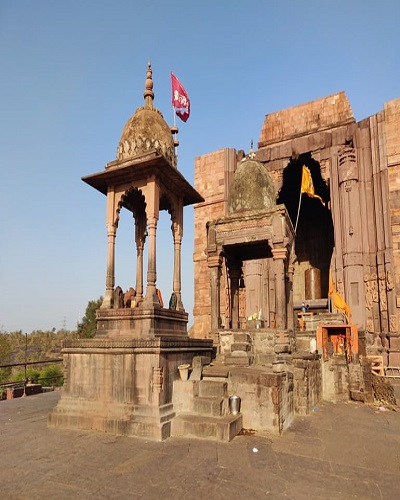
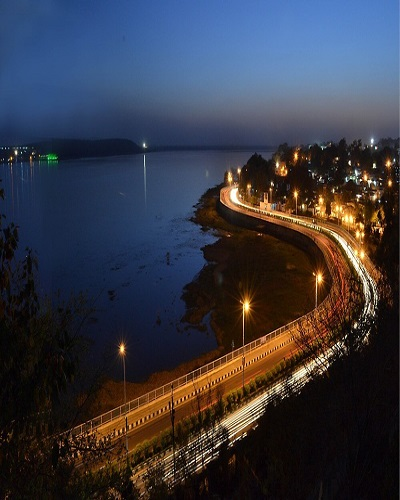
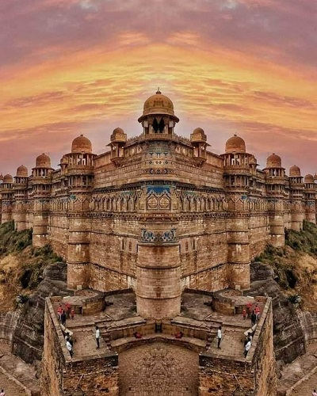
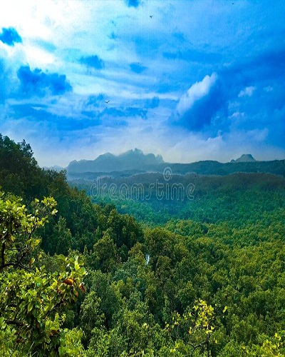
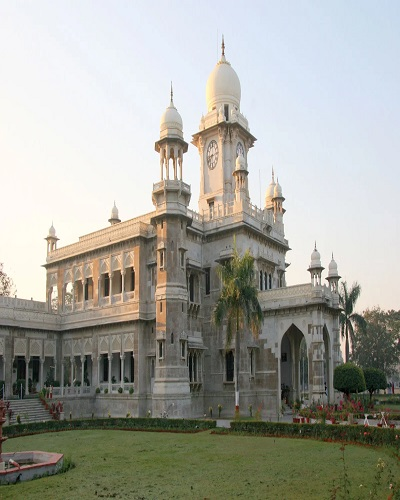
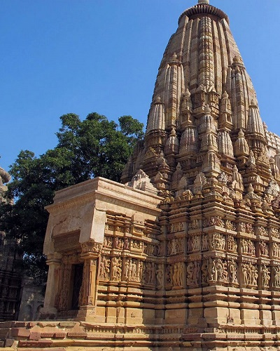
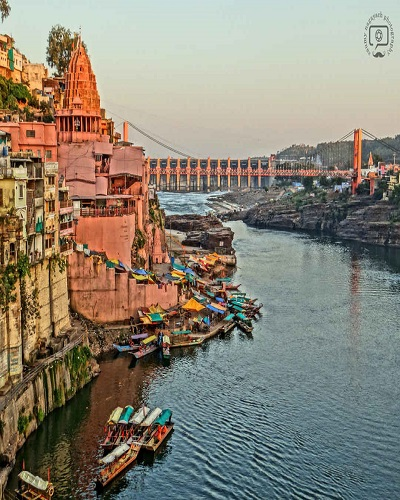
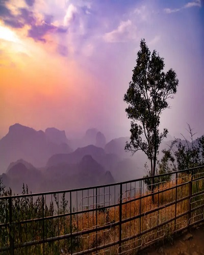
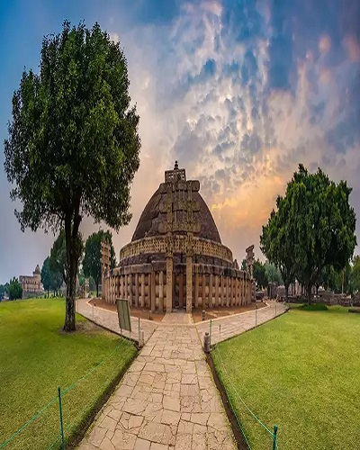
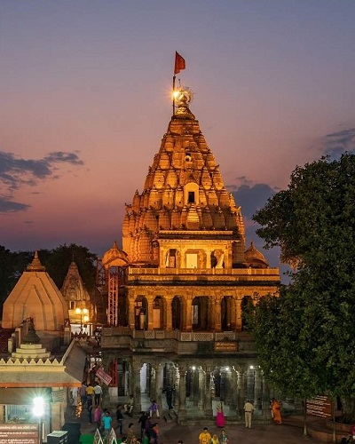

September to March-This is the best time to visit Bhedaghat as the temperatures are temperate and range from 5 to 29 degree Celsius.Read More
Bhedaghat

Bhojpur
The clearer part of the year in Bhojpur begins around September 25 and lasts for 8.8 months, ending around June 17. The clearest month of the year in Bhojpur is November, during which on average the sky is clear, mostly clear, or partly cloudy 91% of the time.Read More
Bhojpur

Bhopal
Bhopal is best visited during the winter months of October to February. The weather is moderate and travelling across the plains would prove to be a very good experience.Read More
Bhopal

Gwalior
The weather in Gwalior is extreme with hot summers and cold winters. If you are the adaptive kind, this destination can be visited throughout the year, but the most ideal time to visit is in the months of September to February.Read More
Gwalior

Hoshangabad
The best season to visit this place is between October and June.Read More
Hoshangabad

Indore
The best time to visit Indore is between the months of October and March when the weather is conducive enough for sightseeing and outdoor activities. Read More
Indore
Kanha National Park
For tiger spotting, the best time to go to Kanha National Park is April and May, but soaring temperatures make this time of year too hot to handle for many. November to March offers balmy temperatures and a lusher landscape, but our temperature and rainfall chart reveals all the details.Read More
Kanha National Park

khajuraho
October to February: These months comprise the winter season in Khajuraho and can be considered as the best time for outdoor tourist activities especially the temple tours.Read More
khajuraho

Omkareshwar
The best time to visit Omkareshwar is from October to March.Read More
Omkareshwar
Orchha
The best season to visit Orchha is the winter season.Read More
Orchha

Pachmarhi
Anytime is a great time to visit Pachmarhi, but summer is the best climate to visit Pachmarhi. Read More
Pachmarhi

Sanchi
The best time to visit Sanchi is between the months of October and March, when the weather stays at its best.Read More
Sanchi

Ujjain
The best time to visit Ujjain is between the months of October to March.Read More
Ujjain
Bandhavgarh National Park
The best time to see tigers in Bandhavgarh National Park – April and May – also coincides with scorching temperatures, but the park is open most of the year, with lush landscapes after the monsoon and crisp mornings during December and January.Read More